Mark 1
A round bump over a screw
Usually a screw or nail pop: the framing moves a little with the seasons and pushes the head out. A small fix, best done before you paint.
Drywall & painting · Austin, TX 78747
Sheets hung on the studs, seams taped and feathered, ceilings finished overhead and the walls painted once the mud is dry. Drywall and painting for Austin homes, one stage at a time.
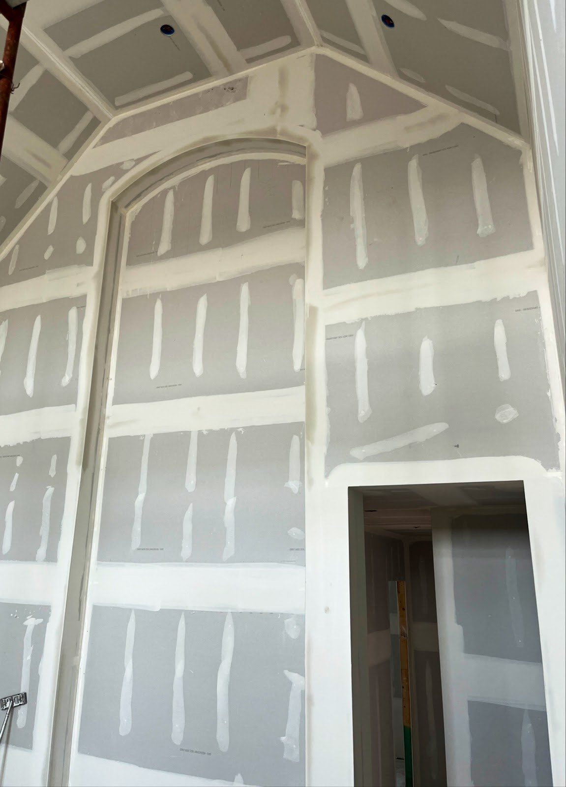
tap a stage ↓Every room goes framing to colour in the same order. Pick the stage your project is at and see what that work covers.
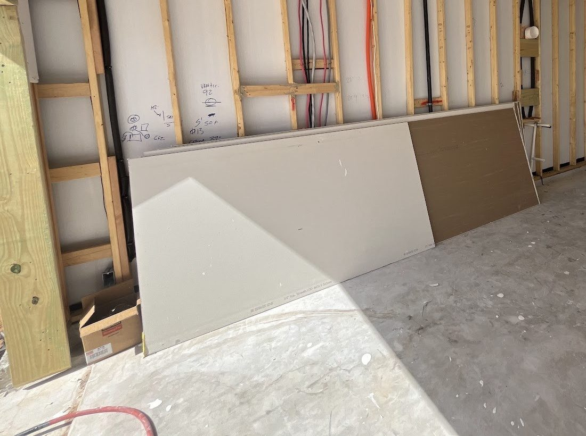
Hanging is screwing gypsum board to the studs and ceiling joists, so a framed room becomes walls. You need it on new framing, in remodels and additions, or wherever old board has come out.
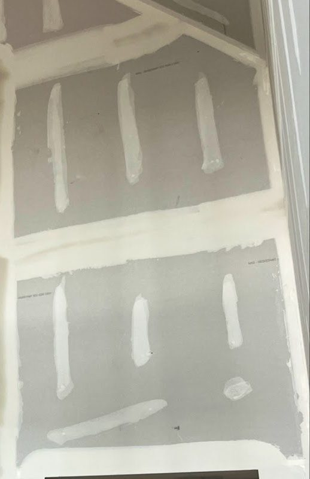
Taping and finishing hides the joints and screw heads under paper tape and joint compound, coat by coat, until the wall reads as one flat surface. It is the stage that decides how a painted wall looks in side light.
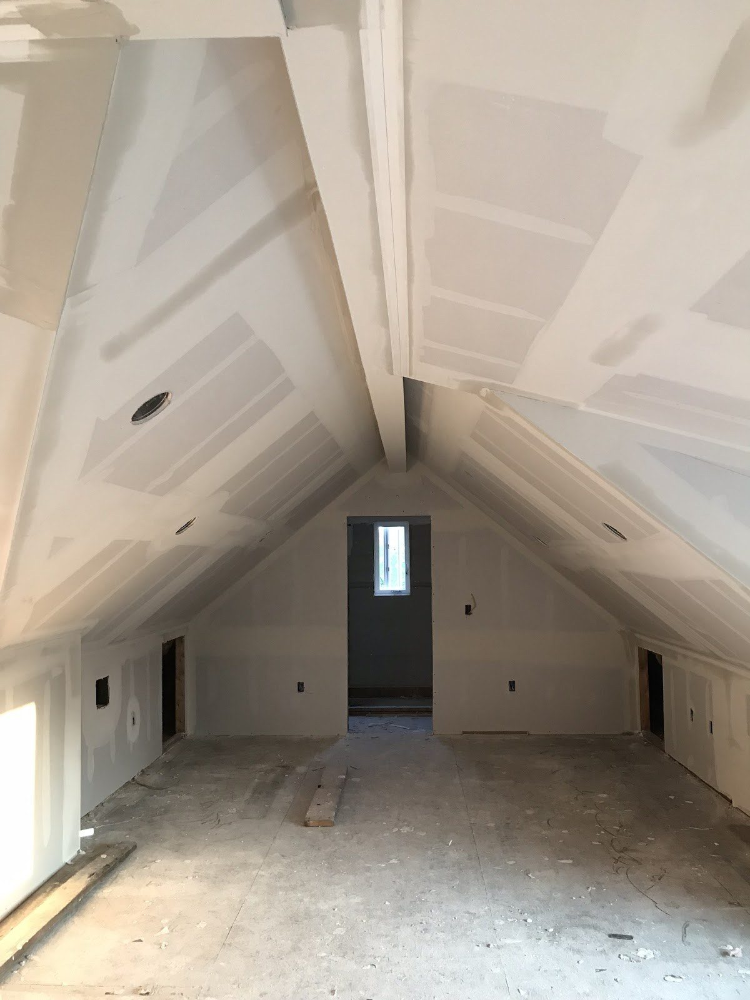
Ceilings are the same craft overhead: vaulted rooms, attic slopes and two-storey walls need sheets hung and seams feathered where daylight runs right across them. It is the work most homeowners notice from the couch.
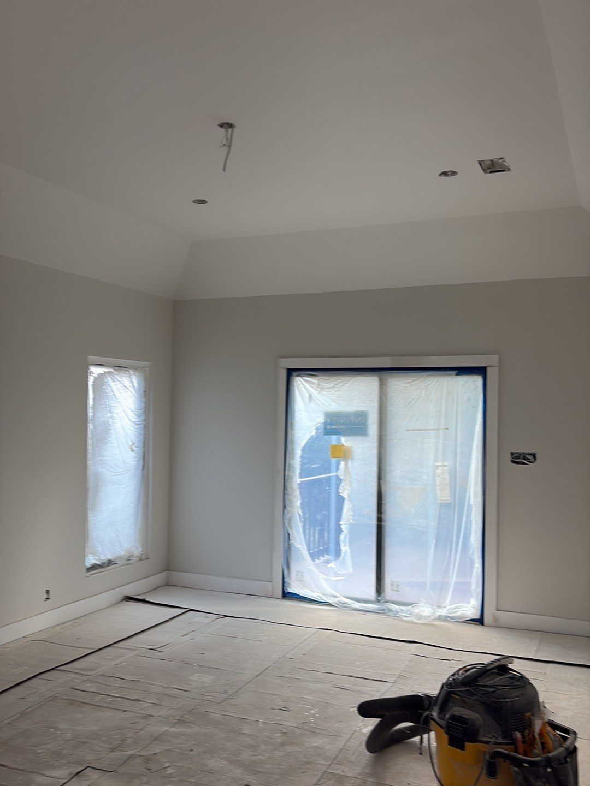
Painting is the last coat: primer seals the paper face and the compound so the finish colour goes on even, then the walls and ceilings get their colour.
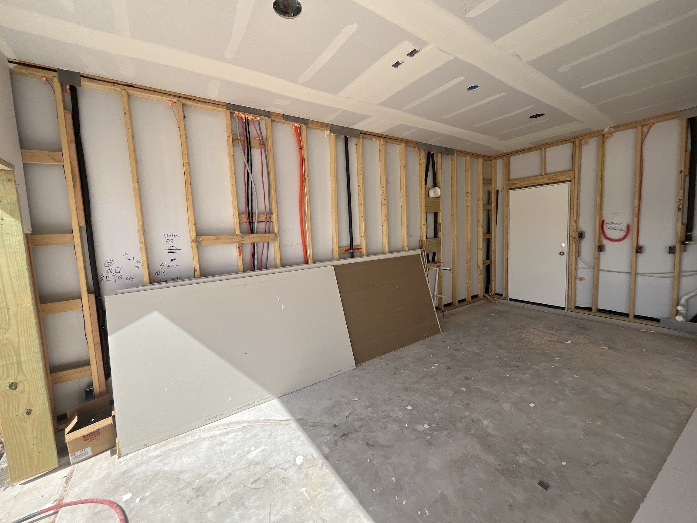
studs first. walls next.
Framing, wiring and the ceiling done, sheets waiting against the studs: the moment just before a room starts to look like a room.
M&M job photo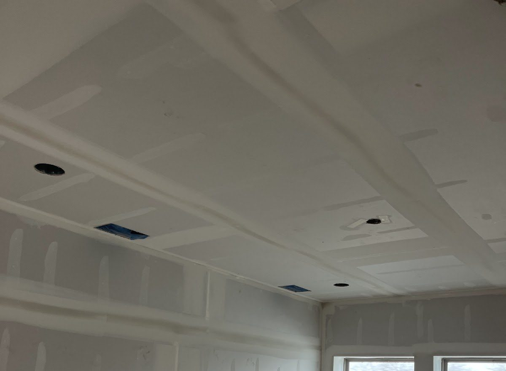
tap a mark ↓Four marks homeowners spot most often, and what they usually mean. General advice to help you describe it, not a diagnosis.
Mark 1
Usually a screw or nail pop: the framing moves a little with the seasons and pushes the head out. A small fix, best done before you paint.
Mark 2
A crack that runs dead straight usually means the tape under it has let go. Re-taping fixes it; filling the crack alone tends to hide it for a while.
Mark 3
Cracks running off door and window corners are common as a house settles. Note its length today; if it keeps growing, have it looked at.
Mark 4
That is water. Find and stop the leak first. Board that stays soft once it dries usually gets cut out and a new piece hung in.
tap to look closer · swipe →Rooms photographed mid-job, before the furniture and the dust sheets come off.
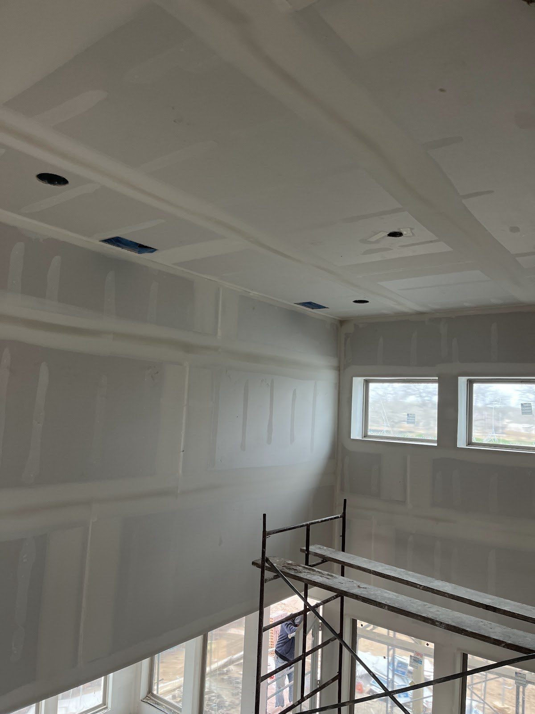
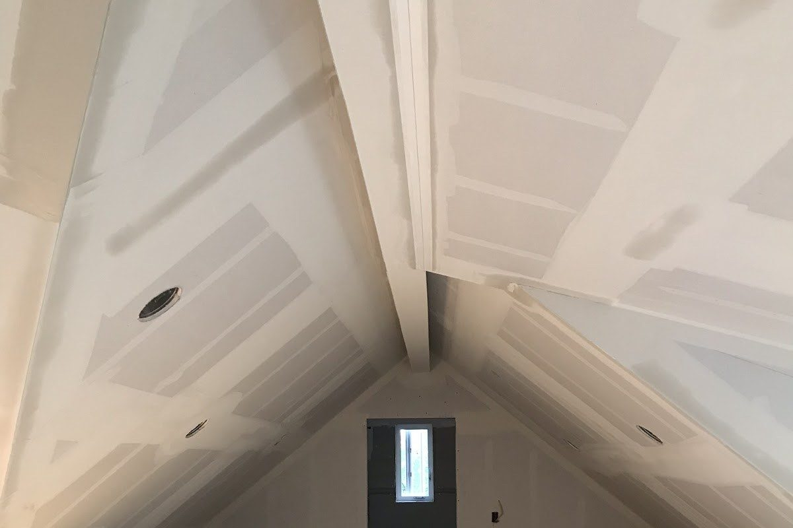
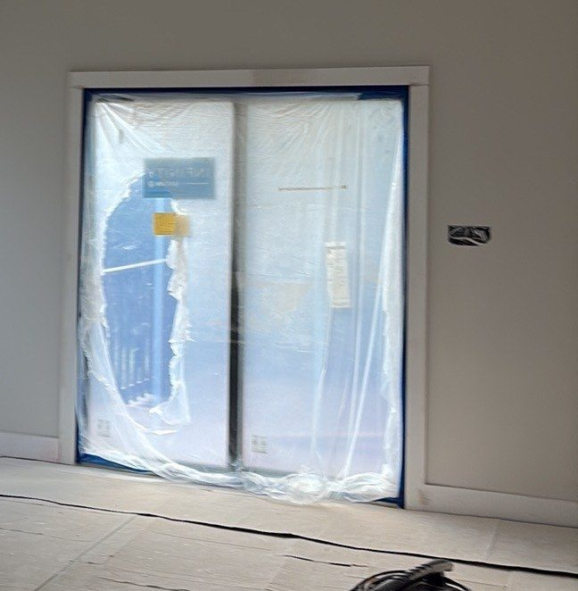
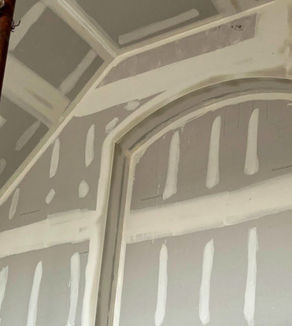
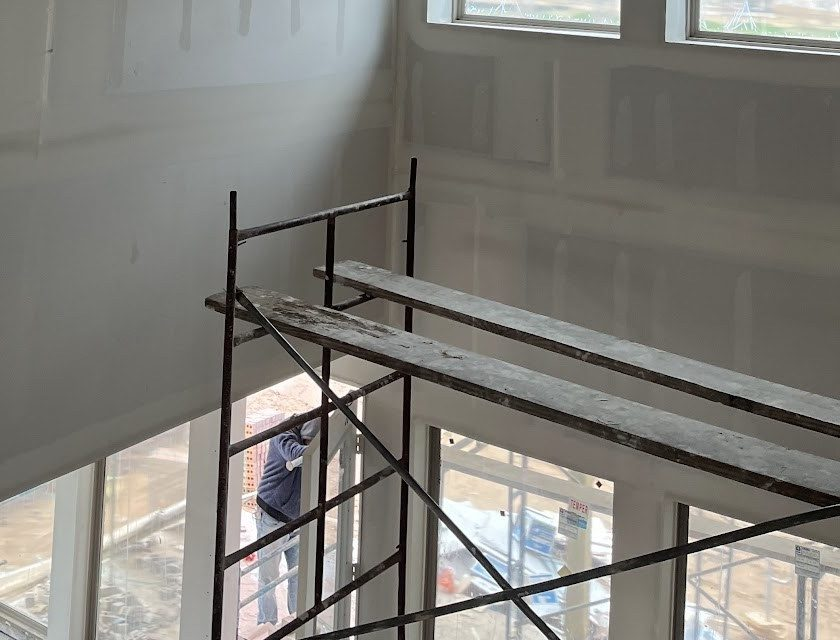
your room next?
Text a photo of the wall or the framed room and say what it needs.
Text (737) 707-8026Drywall & painting
in Austin, TX 78747
call, text, or send the form
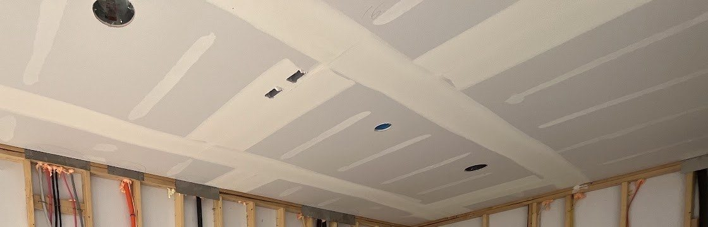
M&M Drywall
photos of the room help